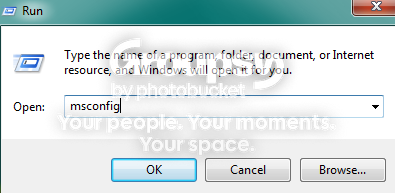
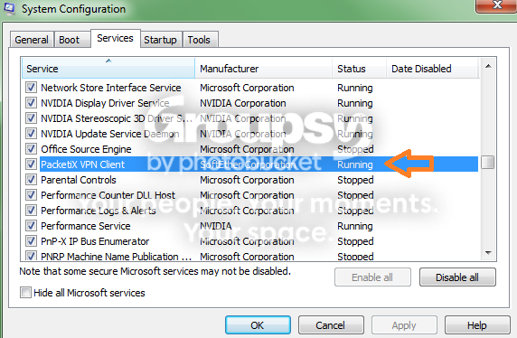

ถ้าไม่ได้ขึ้นว่า Running ทั้งๆที่เปิดตัวโปรแกรมแล้ว
ให้ติ๊ก Enable เสียนิ
ไม่ได้ก็ลบลงใหม่เลยแหนะ แต่่ถ้ายังไม่หาย ให้ดูด้วยว่าเครื่องเรามีโปรแกรมอะไรไป Disable Service พวกนี้ไหม
ยกตัวอย่างโปรแกรม
- Tune up utilites
- ASC Advance System Care
Disable unnesessary service to speed up your computor
ถ้าเคยเล่นปกติดีอยู่แล้วอยู่ดีๆเล่นไม่ได้ขึ้นมา ให้รีเร้าเตอร์ปิดทิ้งไว้ 10-20วิ ,รีบูทเครื่องด้วย แล้วเปิดโปรแกรมต่อใหม่ก็น่าจะหายเป็นปกติเองนิ